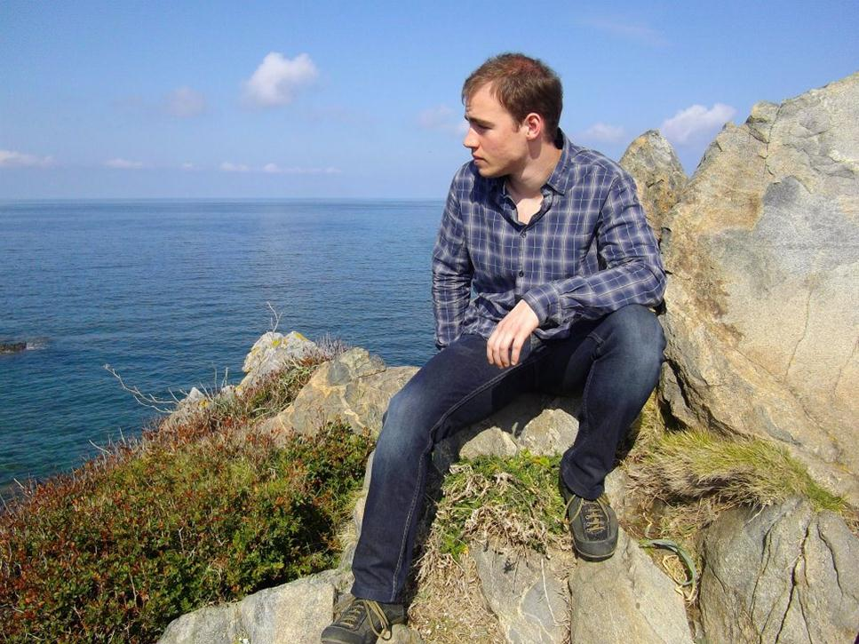
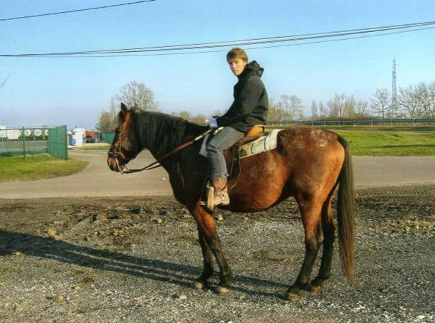
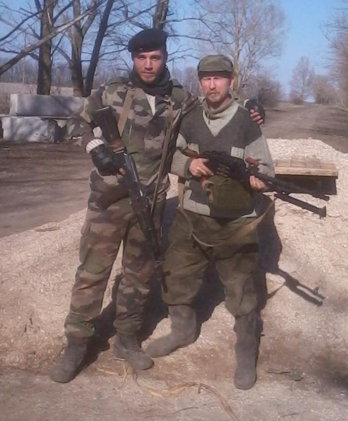
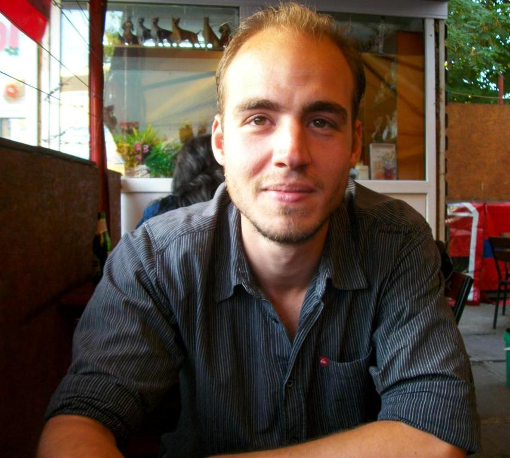

- Je m’appelle Philippe CALFINE, je suis un Français de 23 ans, actuellement engagé volontaire dans le 3ème bataillon de la garde républicaine de la DNR, anciennement connu sous le nom d’OPLOT. Je suis dans le Donbass depuis 8 mois. Désireux de justice, je me bats aujourd’hui pour la liberté du peuple russophone. J’aime lorsque la vie se fait simple, pourtant il est trop difficile de ne pas s’indigner, face à la trahison permanente de ce type de gouvernement illégitime, ni d’en chercher causes et solutions. Gouvernement vendu à la grande finance, corrompu par les USA, créateur de dette imaginaire, de guerres et d’une profonde misère sociale, celle-ci bien réelle, justifiant une politique agressive en prétendant arrogamment lutter contre autant de problèmes dont il dépend. En France, verrouillant petit à petit mais sûrement, son système d’écoute et de contrôle de l’individu, au niveau physique et psychologique ; ce dernier est condamner à perdre sa liberté de penser et d’agir, via aussi la machine de propagande médiatique. Cette trahison de l’état, dégradant les différents secteurs de logement, du travail, de santé, culturel ; leur mafia industriel, agro-alimentaire, pharmaceutique aussi, est un fait dont j’ai pris conscience et assimilé, qui as façonné ma vie et qui m’as guidé jusqu’ici. Aujourd’hui donc, ce qui me définit le mieux, je pense, c’est mon désir de lutte contre ces pouvoirs qui vivent, et s’enrichissent, sur le dos et au dépend du peuple.
- Quel a était votre vie en France ?
- J’ai vécu en Provence, au bord de la mer, au cœur d’une famille ouvrière, peut-être pas parfaite, mais bienveillante portée sur l’amour, le partage, et les bonnes relations humaines. J’ai commencé à me politiser au début de mon secondaire, formant avec quelques amis, tous avec des idées finalement bien différentes, un groupe de réflexion. Durant la même période, j’ai eu la chance de rencontrer une femme anarchiste, qui a contrebalancé certaines de mes idées arrêtées. À côté de ma passion pour la politique et la philosophie, les deux seules matières qui m’ont vraiment attiré durant mes études d’ailleurs, j’ai pu faire de la natation, quelques années de tennis, du base-ball. J’ai également touché à quelques sports de combat. J’aimais entendre du violoncelle, violon, accordéon, mais, peut-être par conformisme, j’ai pratiqué de la guitare. De théorie à la pratique, la réalité du monde du travail qui s’en est suivi as été enrichissante, de par l’expérience que j’ai pu en tirer. J’ai appris comme à chacun la galère d’un loyer, et des différentes factures à payer. J’ai travaillé 4 ans, en contrats déterminés renouvelés. J’ai pu avoir une approche, une compréhension, plus concrète de la politique libérale des entreprises. À côté de ça, je me suis ré-informer, grâce à internet, tout en ne faisant de moins en moins confiance aux médias standards qui ne collaient, et ne collent, pas du tout à la réalité. De fil en aiguille, je me suis focalisé sur la géopolitique, les intérêts extérieurs, les famines, les déforestations, les maladies, et aussi les guerres, un peu partout dans le monde, avec trop souvent les mêmes protagonistes, acteurs et responsables de tous ces drames, à savoir, les différents membres de l’OTAN et leurs rêves impérialistes. J’aimais beaucoup m’évader, notamment en moto, parcourant les jolies routes de ma région, autour des lacs, des collines, avec mon voisin, un ami proche, porté sur la méditation, la spiritualité.
- Pourquoi le conflit du Donbass a-t-il attiré votre attention ?
- Le conflit au Donbass a été la goutte de trop qui m’as définitivement fait haïr la politique Occidentale. Conflit très particulier d’ailleurs car on s’en prend là directement au peuple russophone, pour qui, de manière un peu inexplicable, je ressentais déjà en France, une affection particulière. Je me suis renseigner sur le coup d’état fasciste de Kiev donc, et des crimes commis par cette junte en Ukraine. J’ai analysé les tenants et les possibles aboutissants. Je n’ai pas été surpris à vrai dire, de son financement des USA, toujours d’actualité aujourd’hui, mettant l’Ukraine quasiment dans l’obligation, de continuer la guerre. Les horreurs pratiquées, sur des femmes, enfants, vieillards, à Kiev mais ailleurs aussi comme Odessa sont pour moi impardonnables. Les différents bombardements sur Donetsk qui ont suivi aussi. Le fait que l’actuel président Français supporte son homologue Ukrainien a aussi joué son rôle dans mon envie de venir en aide, car mon pays se porte directement complice de cette guerre. Sachant aussi que personne n’a à gagner d’une victoire Ukrainienne, ni le peuple Russophone, ni le peuple d’Occident, pas même le plus concerné, le peuple ukrainien lui-même. Sachant aussi que ce coup d’état est totalement faux et manipulé pour une élite d’oligarchie. Enfin sachant que le président Russe se trouve dans l’incapacité, pour le bien de ses citoyens directs et de celui de tous les peuples ne souhaitant pas une escalade fataliste de violence, de venir aider de manière significative la population du Donbass, présageant de ce fait une guerre plutôt longue et pénible pour ce dernier. Concrètement, évidemment dissimulée derrière toujours cette même propagande antirusse, la volonté de l’élite Occidentale de venir piller les ressources naturelles de l’Ukraine, mais aussi humaines, d’en contrôler le territoire, la présence de volontaires étrangers est plus que jamais un devoir. Enfin j’ai éprouvé un très grand respect pour les Résistants du Donbass. Is m’ont offert beaucoup d’espoir, quand on voit l’ennemi qu’ils affrontent, et c’est toujours une profonde tristesse de perdre des gens d’une telle valeur, sur le champ d’honneur. J’en profite par ailleurs pour apporter mon soutien total à toutes les personnes qui ont perdu un proche ou plusieurs dans ce qui est, un génocide par l’armée envers son peuple.
- Quels sont les objectifs de votre vie ?
- Les objectifs viennent de la conscience. La mienne me dit de donner mon grain de sel pour nous diriger vers des sociétés plus justes et humaines. J’ai des idées, des projets en maturation, pour y parvenir, mais aucuns qui ne serait changer avec le temps, à savoir que le présent apporte beaucoup d’éléments nouveaux qui ne pourrait être pris en compte autrement qu’en acceptant de ne pas tout maîtriser ni programmer, ne serait-ce qu’une rencontre, l’important étant de ne pas « manquer son train » lorsqu’il se présente. Globalement, j’aimerais éveiller, au moins, une certaine partie de la population quant à la réalité de leur gouvernement. Je rêve de révolution, de la vraie, celle faite par le peuple pour le peuple. Mais finalement, très peu de monde est prêt en France à donner de leur temps pour atteindre cette utopie de société parfaite et harmonieuse. Il faudrait dans un premier temps assainir le système déjà existant, en rendant les places des hautes sphères particulièrement peu enviables. Pour les politiques, interdiction de cumuls de mandats, de fonctions, et de revenus. Interdiction aussi d’investissements pendant leur période politique, qu’aucun pot de vin ne puisse se dissimuler, ni aucun arrangement à profil personnel, et ce par un contrôle systématique et strict de leurs mouvements financiers. Leur faire un contrat comme à chacun des citoyens d’aujourd’hui, c’est à dire avec une possibilité de licenciement, si ne correspondant pas, finalement au poste occupé ; cela évitera ce rituel, cette comédie de qui mentira le mieux pendant les élections, ne tenant compte d’aucune promesse une fois passé. Non seulement rupture de contrat mais aussi poursuites judiciaires, si ces mensonges sont également trahison de la personne à l’encontre de son peuple. À ce titre d’ailleurs, plus de président, mais un représentant, libre dans ses agissements de par ses obligations. Taxer la bourse aussi, cela n’évitera pas par ce seul point la spéculation mais elle fera un revenu supplémentaire utile et plus rationnel qu’allez prendre chez les petites gens. Faire payer la dette du pays aux seules responsables, c’est à dire aux « génies » à la tête du pays qui cautionne encore l’idée de création monétaire par la dette, évidemment, lorsque les dés sont truqués et qu’on ne joue pas avec son propre argent. Enfin, comment voulez-vous qu’une société tourne rond si ceux qui fixent les règles sont les premiers à pouvoir les éviter, comment encore appeler ça une démocratie. Donc pour tous ces gens-là, tribunaux. Beaucoup de travail à faire du côté de la liberté de la presse, du fonctionnement des entreprises, des entreprises, de l’éducation nationale aussi, où il faudra supprimer au maximum toute forme de propagande. Bref, assainir. Tester ça durant une durée pas trop longue, et refaire des élections proposant des systèmes concrets différents, comme par exemple une politique par tirage au sort, puis enfin s’adapter tout simplement aux choix du peuple, pour finalement le laisser petit à petit reprendre le contrôle de son propre pouvoir. Évidemment ce sera un rêve tant que le peuple aura cette peur de perde les biens matériels que l’État doit lui céder.
- Quelles sont vos impressions sur Donetsk ?
- Je suis tout simplement tombé amoureux de cette ville. D’un point de vue purement matériel, cette ville est magnifique et vaste, de beaux bâtiments, de nombreux et grands parcs faisant respirer cette dernière, de grandes places aussi. Elle est vraiment très bien entretenue, assez surprenant d’ailleurs lorsque l’on sait que la zone se fait périodiquement bombarder, et que le front est tout proche de sa banlieue, j’insiste car c’est l’une des premières chose qui m’ait frappé à ma première arrivée sur Donetsk. Les déplacements sont faciles et peu onéreux, entre 3 à 7 roubles pour n’importe quelle destination, sur Donetsk, que ce soit en bus ou en tramway. Aussi, autant les routes à l’extérieur de Donetsk sont, la plupart, en mauvais état, autant celles du centre me font bien regretter la moto. J’aime ses différents marchés. Je m’y suis promené lorsque j’en ai eu l’occasion. En rapport à sa superficie, j’aurais pu m’attendre à un environnement étouffant, mais il en est tout le contraire. Évidemment, avec la guerre, la ville ayant perdu la moitié de sa population, il est délicat de prendre, ce que j’ai pu voir, comme une référence fixe du rythme de vie de la ville. Pour la population d’ailleurs donc, impression très positive aussi. Les gens sont dans la grande majorité accueillants, souriants, pleins de vie. Malgré la barrière de la langue, je réussis la plupart du temps à communiquer et il est toujours intéressant ici de rencontrer de nouveaux visages. Je suis ici depuis 8 mois. 8 mois qui m’ont fait oublier petit à petit l’individualisme qui émane en général des sociétés occidentales, pour cette atmosphère plus ouverte que j’ai trouvé ici. J’y repense, un peu contre mon gré, lorsque des amis partageant mes idées me donnent de leurs nouvelles et racontent leurs péripéties en France. La vie est aussi étrangement calme, d’apparence tranquille et sereine. Il est troublant de passer de la ligne de front à la pleine ville, comme s’il n’y avait pas la guerre, ou encore qu’elle n’ait jamais existée.
- Est-ce que vous avez déjà fait connaissance avec la culture Russe traditionnelle et contemporaine ?
- Par petites touches oui. Alors ça fait très cliché, mais si ancré qu’il s’agit là selon moi bien d’un phénomène culturel, je ne peux commencer qu’en parlant de la Vodka. Récemment encore, un virus se baladait, tout mon groupe l’a attrapé à intervalle d’un jour environ, et le remède d’ici, offert par une grand-mère à deux maisons de la nôtre, du miel dans de la Vodka, première fois de ma vie qu’une personne âgée me fait boire, forcément, c’est au Donbass que ça devait arriver. Sinon aussi le fameux samovar, culture traditionnelle dont son histoire m’a été racontée, qui nous est bien utile d’ailleurs. Dans divers endroits, impossible d’avoir de l'électricité, en revanche le bois dans le Donbass ce n’est pas ça qui manque, il peut rapidement devenir, de plus avec le froid, indispensable pour le moral. Sinon c’est plus une anecdote qu’autre chose mais, le tout premier front où je suis arrivé, j’ai fait la rencontre d’un certain « bop » dans l’une des tranchées, il aimait beaucoup discuter, et chanter, il m’a donc chanté plusieurs chansons traditionnelles russes, dont certaines que je connaissais déjà. J’en ai tiré quelques vidéos. Enfin j’ai eu la chance de pouvoir assister au festival de littérature, sur la place Lénine, et rencontrer des écrivains, tel qu’Hélène Zaslavskaya, des musiciens aussi. Alors évidemment, ayant un lexique russe très restreint, j’ai n'ai pu comprendre qu’approximativement mais tous ont été très agréables et j’en garde un excellent souvenir.
- Comment pourriez-vous imaginez votre vie après la guerre ?
- Ma vie après la victoire dépendra de la situation d’après-guerre. Je ne peux pas dire où je pense même vivre car, n’ayant pas de documents russes, je ne sais pas si je serais autorisé à rester ici, et je ne sais pas non plus si j’en aurais d’ici là. L’une des étrangetés de ce conflit est qu’il pourrait se finir du jour au lendemain tout comme finir par se congeler et se prolonger des années. On voit bien, en temps de trêve, que toutes les positions restent tenues, protégées et prêtes à attaquer. De plus, tous les soirs, malgré la trêve, il y a toujours quelques tirs ukrainiens en signe de provocation. La paix véritable, c’est à dire, que l’on puisse retirer soldats et matériels militaires va me semble-t-il surprendre beaucoup d’entre nous qui finalement s’habituons à ce rythme de vie. Il persistera malgré tout une anxiété que cela ne reprenne pendant un certain moment. Quoi qu’il en soit et cela étant dit, a priori je me vois mal arrêter là et reprendre ma vie d’avant, j’aurais l’impression de revenir en arrière, puis de faire du sur-place. Non je pense plutôt à avancer, persister dans mes idées. J’espère qu’un tribunal sera ouvert, pour les Ukrainiens appartenant aux groupes radicaux, et notamment ceux qui les financent, comme Komoloisky entre autre, si ce n’est pas fait avant. Si ce n’est pas le cas, je suivrais peut-être l’exemple d’un ami Français, qui a vécu 2 ans au Donbass et qui aujourd’hui en France, lance des procédures judiciaires à l’encontre des membres du gouvernement Français et Ukrainien entre autres. Ou encore de partir en Syrie aux côtés d’un groupe russe. J’espère d’ici là avoir réussi à maîtriser la langue Russe, sinon, cela rentrera dans un souhait à réaliser. Encore une fois, tout dépendra de la durée et des circonstances de cette guerre. Où que ce soit, je compte faire durer mes bonnes relations avec le peuple russophone, avec par exemple l’Institut Franco-Russe en train de se monter ici-même à l’Université Nationale Technique de Donetsk. Et enfin, en parallèle, militer pour mes idées politiques, dont l’objectif est cité à la question concernée.
Partager cette page